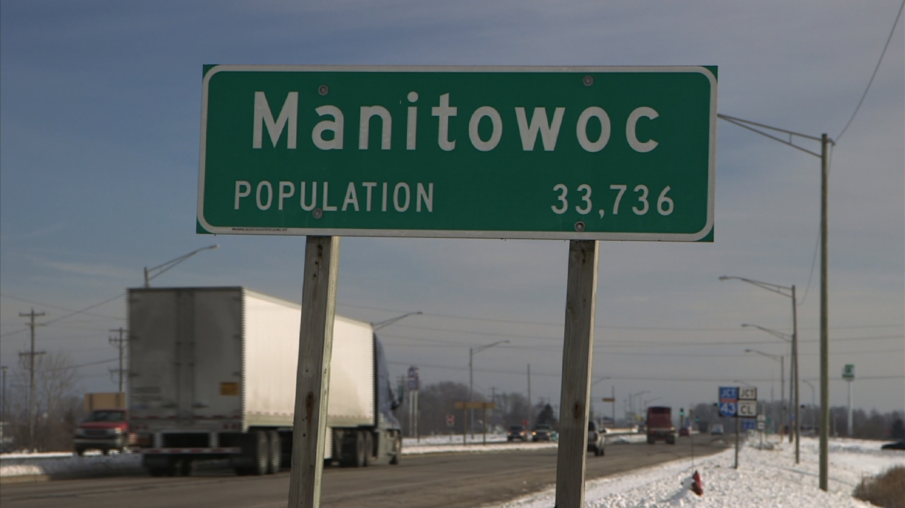

Enfance 62-81 voir +
Steven Allan Avery est né en 1962 dans le comté de Manitowoc, dans le Wisconsin. Depuis 1965, sa famille a exploité un chantier de récupération dans une zone rurale sur une propriété de 16 hectares située à l’extérieur de la ville. Dans son enfance il a fréquenté des écoles spécialisées pour enfants avec un retard mental important.  [src] https://minnesota.cbslocal.com/2016/01/07/manitowoc-wis-fighting-back-against-making-a-murderer-backlash